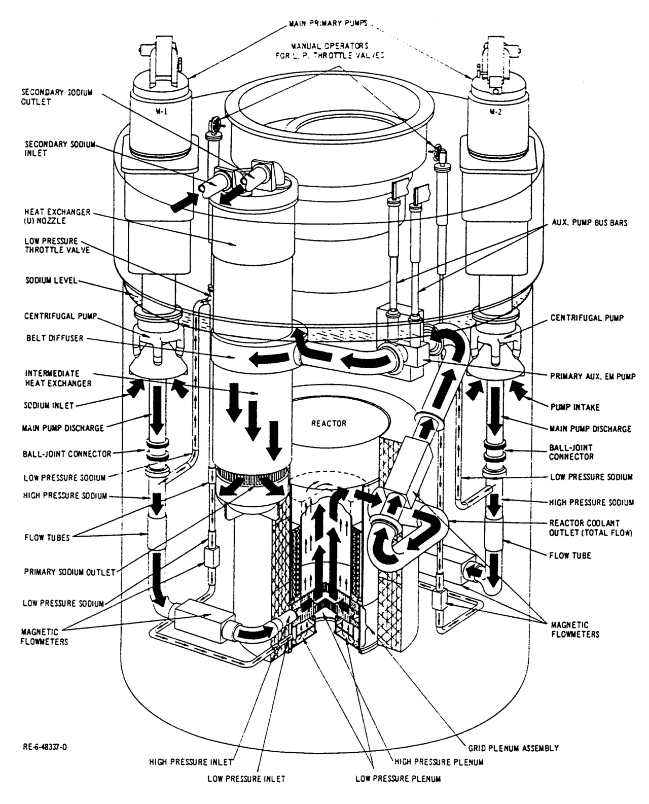
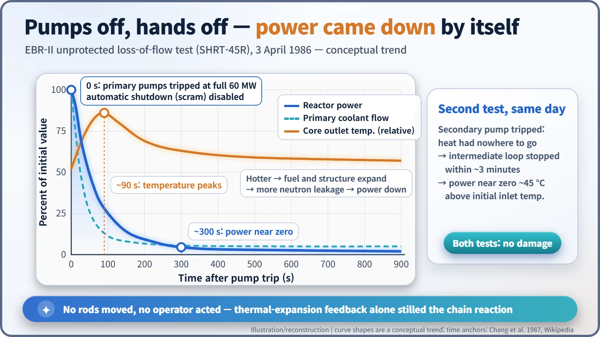
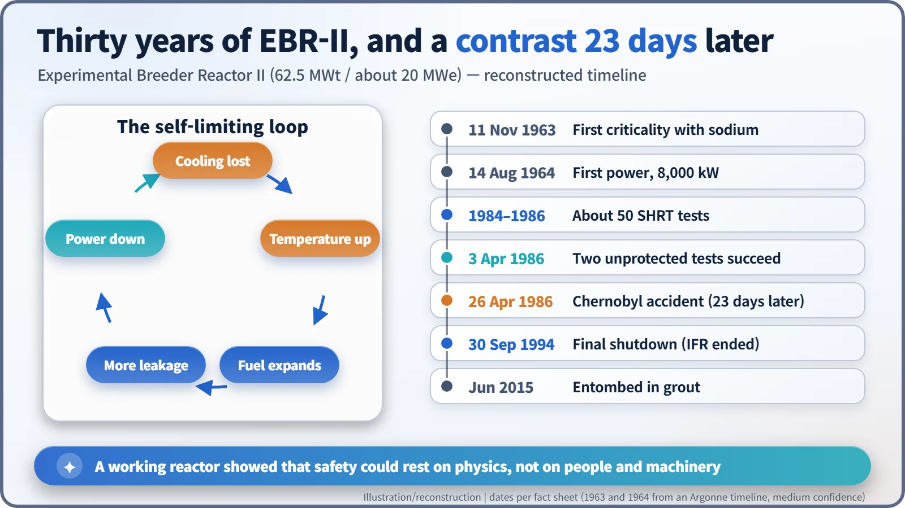
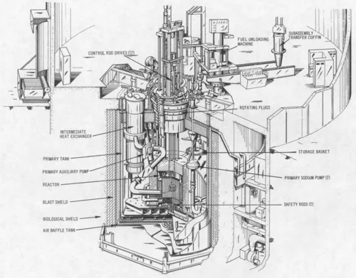

Nuclear History · 211
Hands Off for 300 Seconds — EBR-II's 1986 Inherent Safety Tests
Pumps tripped, scram disabled, nobody touching the controls: the reactor's own physics brought its power to near zero within about five minutes.
On 3 April 1986, Argonne National Laboratory switched off the coolant pumps of the Experimental Breeder Reactor II (EBR-II) in Idaho while it ran at full power, with its automatic shutdown system deliberately disabled. With no control rods and no operator action, the reactor shut itself down within minutes, without damage. A second test that day cut off its heat sink, with the same result. Twenty-three days later came Chernobyl.
Hands off
The operators raised their hands and stepped back from the controls. That is how the official history of Idaho National Laboratory (INL) describes the EBR-II control room on 3 April 1986. The reactor had been running at full power, and its coolant pumps had just been switched off. Nobody reached for the shutdown button, and no control rods dropped in automatically. That was deliberate. The day had one question to answer: if nobody touches anything, will this reactor shut itself down? [5]
Safety that does not depend on people
After the Three Mile Island accident in 1979, there was growing interest in reactors that would stay safe even if operators and safety equipment did not do their jobs. The idea is called "inherent safety": the safety comes from the physics of the reactor itself.
Argonne National Laboratory had the perfect test bed in the Idaho desert. EBR-II was a small sodium-cooled fast reactor, rated at 62.5 megawatts of heat (MWt) and about 20 megawatts of electricity (MWe). It first went critical with its sodium in place in November 1963 and supplied power to its site from 1964. Its core, pumps and heat exchangers sat together in one large tank of liquid sodium, a "pool" design, and its fuel was a metal uranium alloy rather than a ceramic. [4]
The laboratory had history here. In 1955 its predecessor, EBR-I, partly melted during a planned coolant-flow test, when thermal expansion of its fuel rods and support plate pushed power up instead of down. EBR-II was built to behave the opposite way: when it got hotter, expansion should pull power down.

3 April 1986: walking away, twice
The day was the climax of the Shutdown Heat Removal Tests (SHRT), a programme of about 50 individual tests that had been building up since 1984. Argonne invited liquid-metal reactor experts from around the world, along with utility executives and government representatives, to watch. [2] [4] [5]
The first test, SHRT-45R, simulated a station blackout. With the reactor at its full 60 MW, the main primary coolant pumps were tripped. Beforehand, the safety system had been set so that the loss of flow would not trigger an automatic shutdown, or "scram". With the coolant flow falling away, core temperatures rose sharply and peaked after about 90 seconds. All the while, though, fission power was falling, and within about 300 seconds it was close to zero. [2]

The second test cut off the reactor's way of getting rid of heat. Again from full power and again without a scram, the secondary pump was tripped, and within about three minutes the intermediate sodium loop that carried heat to the steam plant had essentially stopped. As warmer sodium returned to the core, power fell by itself. Fission power approached zero when the reactor was only about 45 °C hotter than its starting inlet temperature, with no overshoot in outlet temperature. [2]
Neither test damaged the fuel or the reactor. Charles E. Till, who led Argonne's programme, summed it up the following year: "In both cases the reactor quietly shut itself down, without damage of any kind." [1] [3]
A reactor that relaxes when it heats up
The secret is thermal expansion. When cooling falls short and temperatures climb, the metal fuel, the core structure and the sodium all swell slightly. In a small fast-reactor core like EBR-II's, that makes it easier for neutrons to escape. Fewer neutrons stay to cause new fissions, so the chain reaction weakens. Think of a car whose accelerator eases off by itself whenever the engine runs too hot. Metal fuel also conducts heat well, so its centre stays relatively cool and there is plenty of margin while power falls. Engineers call this behaviour "negative reactivity feedback".

It is worth being precise about what was shown. These were demonstrations against "undercooling" accidents: loss of flow and loss of heat sink. Argonne's own researchers listed passive control of over-power accidents, such as a control rod being pulled out, as work still to be done. And the decay heat that remains after fission stops still had to be removed, here by natural circulation in the large sodium pool. [2]
Twenty-three days later, and a reactor in grout
On 26 April 1986, 23 days after the test, the Chernobyl accident happened in the Soviet Union. Till later wrote that the contrast between the two events drew national attention. The tests became a central argument for the Integral Fast Reactor (IFR), an Argonne concept combining metal fuel, sodium cooling and on-site recycling of used fuel, with EBR-II as its prototype. [1]
In February 1993, President Bill Clinton told Congress: "We are eliminating programs that are no longer needed, such as nuclear power research and development." The IFR was ended in the 1994 budget process. Supporters regretted losing its safety, resource and waste benefits; those who backed the decision pointed to cost and to proliferation concerns about recycling plutonium-bearing fuel. Views still differ. EBR-II shut down for the last time on 30 September 1994. By June 2015, its reactor vessel and basement had been filled with grout, permanently entombing it. [5] [6] [7]

The reactor is buried, but its data live on. From 2012, the International Atomic Energy Agency ran a four-year project in which organisations from many countries tested their safety-analysis computer codes against the records of these tests. Those 300 hands-off seconds became the answer key for a generation of virtual reactors. [4]